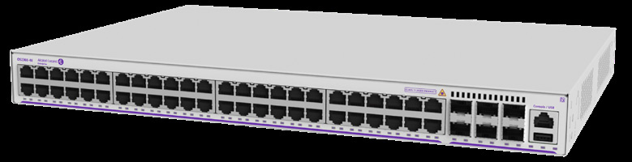

bp-os2260-datasheet

R（触发场景）
- 小微办公/单层 50 信息点以内、预算极紧的有线接入选型
- 客户外包运维只会 web 界面、不需要堆叠和 10G 上联
- 2260-P10/P24/P48 供电预算与 AP/话机/摄像头数量对账
- 投标应答前核对 2260 的星号"未来软件"特性清单
I（核心理念）
OS2260 是 OmniSwitch 家族最底层：WebSmart+ 定位——比全管理交换机便宜、比非管理智能，跑 AOS 软件但只开放 web 界面（WebView 2.0）+ 最关键 CLI 命令子集（原文p1 ："a lower price alternative compared to managed switches... using a simplified web management interface"）。层级上属于 SMB/分支价值接入线（对照 2360=可堆叠 SMB、6360=企业价值接入）。
A1（与相邻系列选型差异）
- vs OS2360：2260 无堆叠、无 10G 上联（全系 1G SFP）；2360 有 10G VC 8 台/216 口和 SFP+ 上联（X 型）。多楼层、要统一管理或 10G 上联 → 升 2360。
- vs OS6360：6360 是企业价值接入（NDcPP 认证、Lightning Config、PH 型可许可升 10G）；2260 面向纯 SMB，管理面只有 web/CLI 子集 + OV2500/Cirrus。
- 判断口诀：无堆叠 + 无 10G + web 管理够了 → 2260；三者任缺一 → 2360/6360。
A2（规格细节速查表）
机型矩阵（原文p3 ，表 1 与商用型号表 原文p4 ）： | 型号 | 用户口（1G RJ45） | 1G SFP 上联 | PoE 预算 | 风扇 | |---|---|---|---|---| | OS2260-10 | 8 | 4 | — | Fan-less | | OS2260-P10 | 8 PoE+ | 4 | 75W | Fan-less | | OS2260-24 | 24 | 4 | — | Fan-less | | OS2260-P24 | 24 PoE+ | 4 | 195W | 1 变速 | | OS2260-48 | 48 | 6 | — | 1 变速 | | OS2260-P48 | 48 PoE+ | 6 | 370W | 1 变速 |
- 上联与堆叠：固定 1G SFP 上联（8/24 口 4 个、48 口 6 个）；无堆叠能力（全规格表无 stacking 字段，原文p3 ）。
- 交换容量与包转发（原文p3 ）：ASIC 容量 8/24 口 128 Gb/s、48 口 216 Gb/s；全口全双工 24/56/108 Gb/s；64 字节帧率 17.9/41.7/80.4 Mpps。
- 电源体系：单一内置电源，Backup power 全型号 N/A（原文p3 ）；PoE 满载功耗 101W（P10）/262.4W（P24）/453.3W（P48）（原文p3 ）；Perpetual/Fast PoE+ 全 PoE 型号支持（原文p1 ）。
- Layer 特性：L2+ 静态路由 IPv4/IPv6（仅 2 条 IPv4 + 2 条 IPv6 静态路由、8 IPv4 + 2 IPv6* 接口，原文p6 ）；无动态路由/SPB/VXLAN/MPLS；无 MACsec。
- 16k MAC、62k VLAN、12KB 巨帧、<4µs 延迟（原文p5 ）。
- 硬件平台：8 口型 CPU 800MHz MIPS-34Kc，24/48 口 1GHz MIPS 双核；512MB RAM、512MB flash（原文p3 ）。
- 功耗/环境：待机 5.3~35.2W；0~45°C 运行（原文p3 -原文p4 ）；MTBF 625k~2174k 小时（原文p4 ）。
- 规格红线：冗余电源 N/A；堆叠无；仅 802.3af/at PoE+（无 bt）。
E（适用场景）
- 单层小办公、零售门店、高-speed 桌面 + 少量 AP/IP 话机（PoE 型 75/195/370W 档）
- 统一通信接入（IP 电话/视频/收敛方案）与安全无线上联（原文p1 部署建议）
- 机架资源紧张时 8 口型半机架 1RU（OS2260-RM-19-L L 支架/OS2260-WALL-MNT 壁挂件，原文p4 ）
B（限制与坑）
- 全型号无备份电源、无堆叠——冗余需求必须上 2360 及以上（原文p3 Backup power: N/A）
- 8 口型 CPU 仅 800MHz MIPS——大 ACL/QoS 规模余量小（原文p3 ）
- 星号"未来软件"特性：DoS 引擎、IPv6 静态路由、port mapping、sFlow v5、远程端口镜像等（"Note: *Future software development"，原文p7 ）——投标按当前 AOS 版本确认
- 静态路由仅 2 条 IPv4（IPv6 路由带 *）——不能当路由器用（原文p6 ）
- 无 802.3bt/多千兆口——Wi-Fi 6/7 高功率 AP 场景需升 6360-P48X 以上
来源：bp-omniswitch-datasheets DOC 1（p1-7，DID21043002EN November 2024）；verified.md C1/X1/X2/X3/P1/P3/F1/F3
仅供内部学习使用 · 教材版权归 ALE Training Services 所有